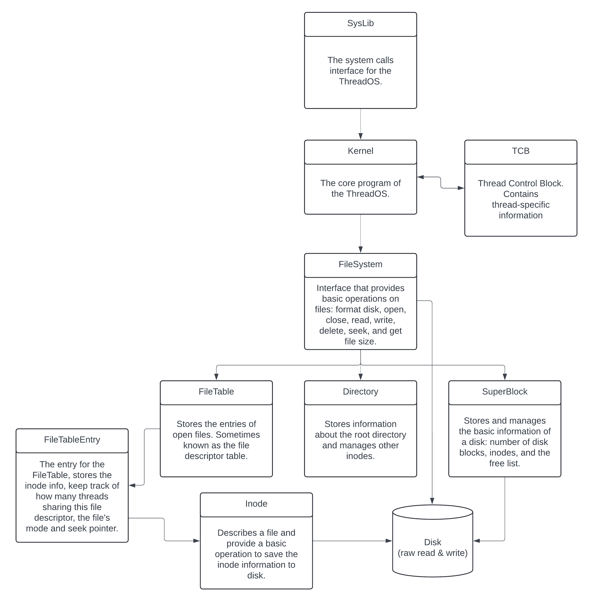
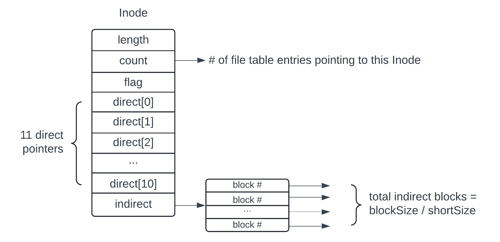
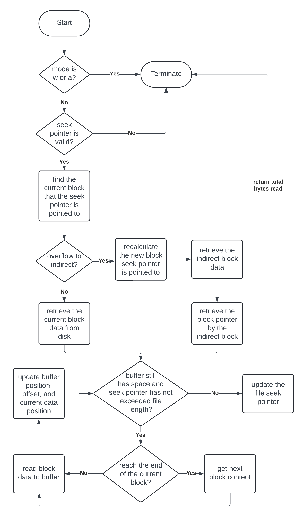
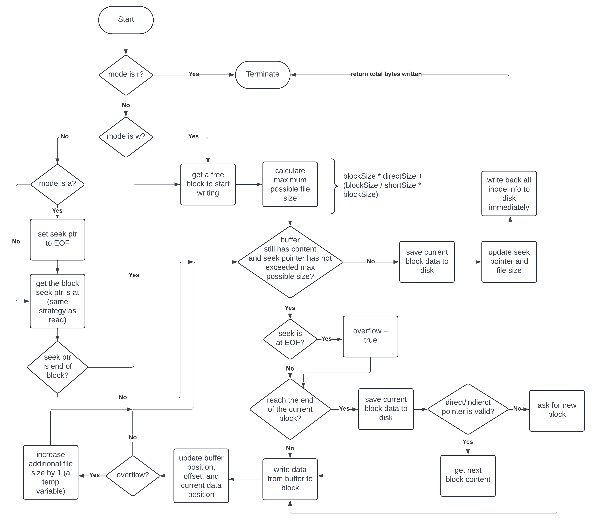

Single-Level File System
Operating system course final project. A single-level File System for the ThreadOS (a faculty-developed OS to teach students OS concepts).

Timeline
May 2024 – June 2024
Implementation Details
Programming Language: Java.
Key Concepts: Multithreading, Inode, Superblock, File Descriptors Table, File System.
Associated with: University of Washington (Bothell)
Warning:
If you are currently a student in CSS 430 and are reading this page, please PROCEED NO FURTHER. It is considered academic dishonesty to copy/modify code from previous students for your project.
I showed this project with the intention to showcase my work and what I designed for my final project. I will not be responsible for your actions.
Specification
Design a Single Level File System for the ThreadOS. The File System must support format, open, read, write, seek, close, delete, and fsize. Since Single Level File System is the most basic file system, it only has a root directory that manages all the files under it. This introduces an advantage for easy implementation. However, the limitation is that each file name must be unique and no sub-directory is allowed.
Big Picture
Below is the overall picture of the File System. Starting with the System calls at the highest level. System calls generate an interrupt to the kernel. The kernel then looks into the TCB to get the file descriptor. After that, the kernel calls the respective method from the file system to perform the needed operation. The file system contains a root directory, the file table (the file descriptor table), and the superblock. The root directory contains inodes, which store the information of each file. Finally, the lowest level is the direct raw read and write to the disk.
File System Big Picture
File System Components Implementation
Details on how each component is implemented are included in the project report below:
Final Project Report
Inode
Each inode describes a file. The inode stores the length of the file, keeps track of how many file table entries are pointing to this, a flag to indicate what/how the file is being used, 11 direct pointers, and 1 indirect pointer. Figure 5 shows a visual of the Inode.
Inode Structure
File System Read Method:
Read is one of the two major operations of the file system. This method is complicated, and I describe the detailed algorithm in the source code. Figure 15 illustrates the general approach (language independent) to read a file given a file table entry and the buffer that the information will be read into.
Process of Reading a File
File System Write Method:
Write is the second major operation of the file system. Part of the general approach is similar to reading, however, writing is more complicated than reading in which we need to allocate new blocks if the information we have written is longer than the file's length. Figure 16 illustrates this process.
Process of Writing to a File
File System Source Code:
I only include files that I modified: File System GitHub